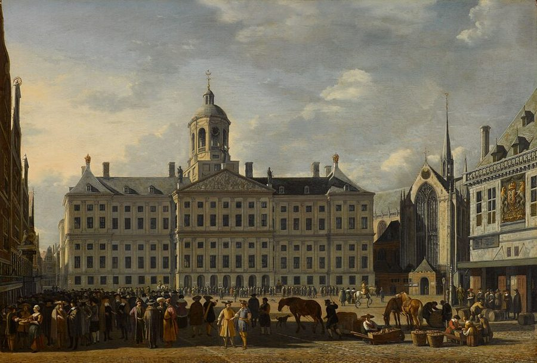
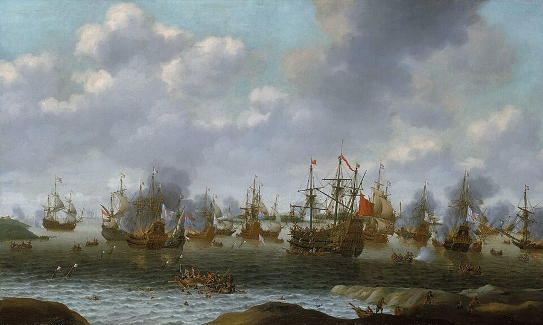
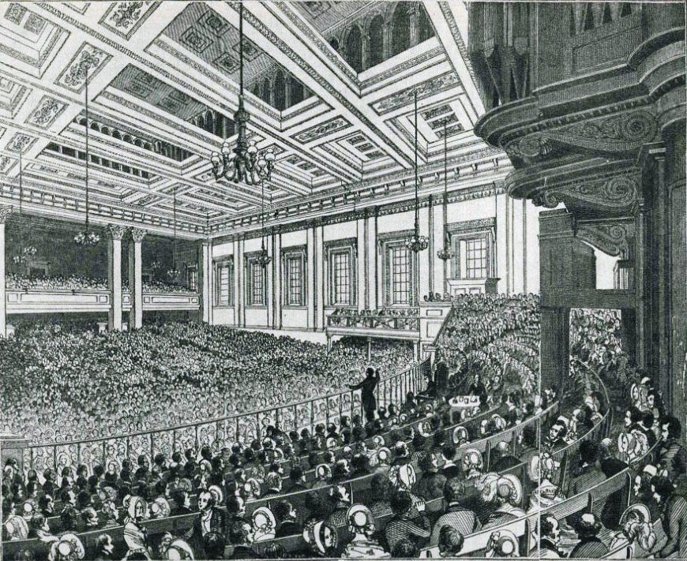

这一页在做什么
全书最有名的那个词「看不见的手」，就出现在这一章，而且全书只出现这一次。可斯密不是在写一篇市场颂歌，他在驳一种具体的政策：用高关税和禁令把外国货挡在门外，让本国某一行独占国内市场。他问：这样做能让一国的产业变多、变好吗？读的时候抓两条线：那句话前后到底在说什么；以及斯密自己列出的几种可以、或者值得斟酌限制进口的情形。

读之前：这一页在全书的哪里
上一页（卷四第 1 章）斯密拆了重商主义的地基：财富不是金银。那一章末尾他数出重商主义让金银流进来的六件武器，两种限制进口、四种奖励出口，说接下来几章一件件检查。这一章是第一件：限制那些本国也能生产的外国货。第 6 段说「前面已经证明过」的那条资本排序，在卷二第 5 章（页 13）；第 33 段、第 45 段两次说「等讲到税时再谈」，那是卷五第 2 章（页 27）。
不用关税和禁令护着，本国的产业会不会被外国挤垮？斯密自己又承认，哪些时候限制进口是对的？
看不见的手那句话立在一个前提上：第 6 段说，投在国内贸易的资本，必定比投在对外贸易的推动更多本国劳动，斯密说这「已经证明过」。今天的经济学不这样算（见页 13）。那句话在书里的分量，也远没有后人给它的那么重。
读的时候带着这几个问题。不用先找答案，读完回来对照「检查一下理解」。
- 看不见的手那句话里，商人「只想着」的是哪两样东西？你以前听说这句话时，知道其中一样是「安全」吗？§2
- 斯密承认保护能让一个行业「提早」建起来，那他为什么还说国家不会因此更富？§3
- 航海法明明让英国买得贵、卖得贱，斯密为什么说它也许是英国最明智的商业法规？§5
- 报复关税和逐步放开，斯密各自给了什么条件？§7 §8
这一页的路线
斯密先摆出对手的做法：英国的进口禁令清单，长得外行想不到。然后提一个看似简单的问题：这让某一行赚了，可整个国家的产业变多了吗？他分三步答。第一步讲总量：一国能雇多少人，受资本多少的限制，管制只能把产业挪个方向，不能变出更多。第二步讲方向：不用人管，每个人自己就会把资本放在本国、放在产出最值钱的地方，看不见的手就在这里出场，紧跟着一句挖苦政治家。第三步讲常识：家里不做买得到更便宜的东西，国家也一样。接着插一段「谁最想要保护」，夸了乡绅，骂了商人。读到第 23 段会觉得方向一转：他开始列例外，两种「一般有利」，两种「值得斟酌」。全章落在一个悲观的预言上。
斯密落在哪：用关税和禁令护住国内市场，不能增加一国的产业，只会把它引到更不划算的地方；外国更便宜就买。但国防和对等课税是例外，报复要看能不能逼对方让步，放开要慢。他还断言，英国永远不会完全恢复贸易自由。
分节地图
这一页是卷四第 2 章，本站切成 8 节。粗体是本站起的节名；「杨译里找」后面是杨敬年译本里这一节开头附近的小标题或第一句，在电子书里搜它就能跳过去；灰色的英文是原文这一节开头的几个词。标「先读」的是最短读法，读完打个勾。
- 垄断国内市场，资本恋家高关税和禁止二者赋予本国某种工业以垄断权是非常普遍的BY restraining, either by high duties, or …先是英国的禁令清单，再是全章的问题（第 2 段，留意 perhaps）。第 6 段阿姆斯特丹商人的故事，是看不见的手的铺垫，别跳。
- 看不见的手（2）他力图生产最大的价值Secondly, every individual who employs his capital …全书唯一一次「看不见的手」，在第 9 段。留意 generally、frequently、not always 这几个限定；第 10 段接着挖苦政治家。
- 裁缝不做鞋，苏格兰不酿酒高关税和禁止进口会指引人们利用资本去在国内生产能从国外廉价购到的货物To give the monopoly of the home-market …裁缝和鞋匠的家常道理；第 13 段承认保护「有时」能让产业提早建立；第 15 段苏格兰用温室酿葡萄酒，贵三十倍。
- 谁最想要保护：商人还是乡绅商人和工厂主从高关税和禁止进口获得最大的好处Merchants and manufacturers are the people who …牛、腌肉、谷物的细账是 18 世纪的事，可以快读；第 21 段夸乡绅大方、骂商人和制造业主爱搞垄断，值得一看。
- 例外一：国防和航海法有两种情况是例外There seem, however, to be two cases …航海法的四条规定可以快读，重点是第 29–30 段：也许出于对荷兰的仇恨，却很明智，因为国防比富裕重要得多。
- 例外二：本国同类产品已经课税（2）当对本国同类制造品课税时The second case, in which it will …论证有点绕，抓住第 31 段第一句，和第 35–36 段的比喻：生活必需品上的重税，就像土地贫瘠、气候恶劣。
- 报复关税和「政客这种狡猾动物」对这一普遍原则可能有两种其他例外As there are two cases in which …第 38 段是一串真实的贸易战，读来很眼熟；第 39 段说报复什么时候值得，顺手把政客叫作狡猾的动物。
- 慢慢放开：十万退伍兵的先例（2）采取缓慢的渐进的办法恢复自由贸易是可取的The case in which it may sometimes …第 42 段十万退伍兵，第 43 段乌托邦和「常备军」，是全书骂利益集团最狠的一段。第 44 段替投了厂房的业主说话。
先用中文过一遍：这一页的概念
先把这一页用到、斯密默认你懂的几个概念讲一遍。讲的是概念本身，斯密拿它推出什么，读原书时自己看。每个概念都有一句「今天」：今天的经济学怎么叫它、怎么看它。重商主义和贸易差额见上一页的重商主义、贸易差额。
§1资本恋家 employ his capital as near home as he can
同样能赚钱，人们宁愿把钱投在离自己近的地方：看得见，认得人，懂规矩。斯密在第 5–6 段把它说成一条普遍的倾向：利润相等或差不多时，批发商宁愿做国内贸易，不做对外贸易；宁愿做对外贸易，不做替两个外国之间运货的贩运贸易。理由很实在：本钱不会长时间离开视线，托付的人底细清楚，万一上当，也知道按哪国的法律去讨说法。这是他回答「不保护，本国产业会不会被外国挤垮」的第一张牌：用不着法律，资本自己就恋家。「资本恋家」是本站的说法，书里没有这个名字。
今天：叫「本国偏好」（home bias）。1989 年底，美国投资者手里的股票九成以上是美国公司的；一国之内，基金经理也偏爱本地公司。不过今天的资本出国，比 1776 年容易得多。
在这一页：第 5–6 段，阿姆斯特丹商人的例子。它是第 9 段「看不见的手」的两条腿之一。
§2看不见的手 an invisible hand
一个比喻：人人只为自己打算，结果却办成了谁也没打算办的事，好像有一只看不见的手在牵着。在这一页，它说的事很具体：商人宁愿投资本国，是为了本钱的安全；想让产品卖得最值钱，是为了自己的利得；两样加起来，恰好让全国一年的收入尽可能大。斯密的措辞处处留余地：他「一般」无意促进公共利益，「常常」比有意去做还有效，这对社会「并不总是」更坏。这个词在《国富论》里只出现这一次，在他的另一本书和一篇文章里各出现过一次，意思都不一样。
今天：常被当成「价格机制自动协调」的代名词。经济学后来证明，个人逐利要保证有效率，得有一串条件：竞争充分、没有垄断和外部性、信息充分（福利经济学第一定理）。
在这一页：第 9 段。前面第 5–8 段是铺垫，后面第 10 段是结论：政治家不该替私人决定资本投向哪里。
§3绝对优势和比较优势 some advantage over their neighbours
裁缝不自己做鞋，鞋匠不自己缝衣服：各人干自己比邻居强的那一行，拿产出去换别的。斯密说国家也一样，外国做得比我们便宜的东西，买比做划算。后人把这叫「绝对优势」：这件事你做得比别人省。1817 年 Ricardo 往前推了一大步，提出「比较优势」：即使一国样样都比别国做得贵，只要各自专做相对最拿手的，交换之后双方仍然都得利。斯密在第 15 段说，多花三十分之一、三百分之一去自己做也荒谬，离这一步已经不远，但他比的始终是两国谁做得更便宜。
今天：比较优势是今天国际贸易理论的地基。经济学家几乎都同意贸易让一国整体得利；争的是得利怎么分，被进口货挤掉饭碗的人怎么办。
在这一页：第 11–12 段裁缝和鞋匠，第 15 段苏格兰的葡萄酒。
§3幼稚产业论 infant industry argument
一个新行业刚起步时成本高，打不过外国的老对手；先用关税护它几年，等它学会了、做大了，成本降下来，再撤掉保护。书里没有这个名字。斯密在第 13 段先承认了它的前半截：这类管制「有时」能让一个制造业比原来早建立，过一段时间做得和外国一样便宜，甚至更便宜。然后他否定后半截：管制的直接效果是减少一国的收入，收入少了，资本就不大可能比原来积累得更快，所以国家的产业和收入总量不会因此增加。后来美国的 Hamilton（1791）、德国的 List（1841）正是拿这个论证主张保护。
今天：仍有争议。保护能把一个行业「提前」培养起来，有研究支持；可这笔账算下来划不划算、什么时候撤，各国经验差别很大，见「对照今天」。
在这一页：第 13–14 段。斯密认为总体上不划算，并没有说保护毫无作用。
故事和背景
这一页里的人、事和 18 世纪的东西，按在书里出现的顺序排，标题前是节号。
§1一张禁令清单
第 1 段像一份起诉书：外国的活牛和腌肉禁止进口，英国的牧场主独占了肉市；谷物的进口关税在平常年景高到等于禁止；外国毛织品禁止进口；丝织业原料全靠进口，「最近」也拿到了同样的禁令；麻织业还没拿到，正大步赶上。Cannan 在注里查了出处：毛织品的禁令能追到 14 世纪爱德华三世的法令，丝织品那条是 1760 年代中期的新法。段末那句「禁止进口的货物种类之多，不熟悉海关法的人很难想象」，是斯密在 1784 年的第三版里加的，八年过去，他的火气没消。斯密说的保护，多是干脆禁止，或者高到等于禁止的关税。
§1宁可多卸一次货的阿姆斯特丹商人
第 6 段的故事：一个阿姆斯特丹商人，把康尼斯堡（今天俄罗斯的加里宁格勒）的谷物运到里斯本，再把里斯本的水果和葡萄酒运回康尼斯堡。他的本钱一半在康尼斯堡，一半在里斯本，本来用不着回阿姆斯特丹。可离本钱这么远，他心里不踏实，于是往往要把两头的货各拉一部分回阿姆斯特丹，宁肯多付一次装卸费和一些关税，只为让一部分本钱待在自己眼皮底下。斯密说，做贩运贸易的国家都成了各国货物的集散地，就是这么来的。他接着打了个比方：本国是一个中心，各国居民的资本总是绕着它转、往它那里靠。整章最有名的那句话，就是从这个小小的心理细节长出来的。
§2一只手的三次露面和一次走红
斯密一生在书里用过三次「看不见的手」。一次是在一篇讲天文学史的早年文章里（他死后 1795 年才出版），说古代多神教的人遇到打雷这种反常的事，就归于「朱庇特那只看不见的手」，口气是调侃。1759 年的《道德情操论》里，富有的地主只想自己享受，却不得不把收成分给替他干活的人，被一只看不见的手引着，让生活必需品的分配，差不多就像把土地平分给所有人时一样。第三次就是这一页。三次说的不是同一件事。历史学家 Emma Rothschild 1994 年撰文认为，斯密对这个比喻并不看重，用它时带点反讽，像一个有用的玩笑；也有学者不同意，认为反讽不等于这个想法不属于斯密。学者 Gavin Kennedy 2009 年指出，19 世纪很少有人提它，是 20 世纪中叶的经济学家，包括 Samuelson 的教科书，才把它捧成市场机制的代名词。
§4阿布维尔的荷兰人和老卡托
第 21 段斯密难得地夸人：乡绅和农场主最不沾「卑劣的垄断精神」，有了好法子乐于告诉邻居；制造业主却有秘密，邻近二十英里开一家同行，有时就紧张。他举的例子是法国阿布维尔一家荷兰人开的毛纺厂，据说厂主要求三十里格以内不许再开同类工厂。这家厂确有其事：法国的资料说，1665 年 Josse van Robais 应财政大臣科尔伯特之邀，带着几十名荷兰工人到阿布维尔办厂，享受免税等特权（Cannan 注里写的是 1669 年）。可那个「三十里格」的条件，Cannan 查了两本当时讲贸易的书都没找到，来源可疑。斯密还引了一句老卡托的拉丁文：种地是最正当、最稳当、最不招人嫉恨的营生。
§5航海法和三次英荷战争

17 世纪中叶，荷兰是「欧洲的大车夫」，各国的货大多由荷兰船运。1651 年英国的共和政府订了第一部航海法，1660 年王政复辟后重订，斯密列的四条就出自后一部：英国殖民地的贸易和沿海运输只许英国船做；大宗进口货只许英国船或原产国的船运进来；不许从荷兰转运别国的货；外国船捕的鱼和鲸油加倍征税。条条都冲着荷兰。随后英荷打了三仗（1652–1654、1665–1667、1672–1674）。斯密说这部法也许出于民族仇恨，却和深思熟虑一样明智。英国到 1849 年才废除航海法，那时它早已是海上的头号强国。
§7科尔伯特和一场 17 世纪的贸易战
第 38 段是一串连锁反应，按书里说：科尔伯特 1667 年的税则对大批外国制成品课了重税；荷兰人请求减税不成，1671 年禁止法国的葡萄酒、白兰地和制成品进口；1672 年的战争「似乎」部分由这场商业纠纷引起；1678 年尼麦根和约为荷兰人减了部分税，荷兰才撤销禁令。英法两国也互相加税，斯密说「似乎」是法国先动的手。还有一段小插曲：1697 年英国禁止弗兰德的花边进口，弗兰德就禁英国毛织品；1700 年英国以对方恢复进口毛织品为条件，撤了花边禁令。这正是第 39 段说的那种「有望逼对方撤销」的报复。
§8十万退伍兵：真的没出乱子吗
斯密拿七年战争（1756–1763）结束时的大裁军当证据：十万多海陆军一下子没了饭碗，人数相当于最大的制造业雇的人，却没出大乱子，流浪汉也不见明显增多，工资只有商船水手那一行降了。他说，习惯了勤劳的工人转行，比习惯了游手好闲的士兵容易。斯密说的是「就我所知」。研究 18 世纪英国法庭记录的历史学家 J. M. Beattie（1974）和 Douglas Hay（1982）却发现，每逢大战结束、军队遣散，财产犯罪的起诉就明显上升，1763 年后也是如此。斯密眼里「没有明显的混乱」，也许只是他看到的那一部分。
§8乌托邦的预言

第 43 段斯密断言：指望英国完全恢复贸易自由，就像指望在英国建起「大洋国」或「乌托邦」。大洋国是 Harrington 1656 年写的理想共和国，乌托邦是莫尔 1516 年的名作。结果，七十年后的 1846 年，英国废除了保护地主的谷物法；1849 年废除航海法；1860 年和法国签了降低关税的条约；此后英国的关税只剩茶、酒等少数为财政收入而征的税，不再用关税保护本国产业。这段自由贸易一直维持到 1932 年：那年英国开征普遍的进口关税，主持的财政大臣 Neville Chamberlain 说，英国 86 年的自由贸易到此结束。斯密低估了自己的书和后来的人，但他说的利益集团难斗，一点没错。
原典：斯密的原话
这本书是公版书，下面几段整段放斯密的原文，配本站的白话译。原文后面的灰字告诉你它在杨译里的哪个小标题附近，可以对照着读；最后一行是这段里今天容易读错的 18 世纪词。
§2看不见的手
全书最常被引用、也最常被断章取义的一段，这里放全段，只略去开头一句（社会的年收入就等于全年产出的交换价值）。在杨译（2）他力图生产最大的价值那个小标题后面第三段。
As every individual, therefore, endeavours as much as he can both to employ his capital in the support of domestic industry, and so to direct that industry that its produce may be of the greatest value; every individual necessarily labours to render the annual revenue of the society as great as he can. He generally, indeed, neither intends to promote the public interest, nor knows how much he is promoting it. By preferring the support of domestic to that of foreign industry, he intends only his own security; and by directing that industry in such a manner as its produce may be of the greatest value, he intends only his own gain, and he is in this, as in many other cases, led by an invisible hand to promote an end which was no part of his intention. Nor is it always the worse for the society that it was no part of it. By pursuing his own interest he frequently promotes that of the society more effectually than when he really intends to promote it. I have never known much good done by those who affected to trade for the public good. It is an affectation, indeed, not very common among merchants, and very few words need be employed in dissuading them from it.
本站译：所以，既然每个人都尽力把资本用来支撑本国的产业，又尽力引导这份产业，让它的产出最值钱，那么每个人也就必然在尽力让社会一年的收入尽量大。当然，他一般既没打算促进公共利益，也不知道自己促进了多少。他宁肯支撑本国的产业、不去支撑外国的，只是图自己的安全；他引导这份产业，让产出最值钱，只是图自己的利得。在这件事上，和在许多别的事上一样，他被一只看不见的手牵着，去促成一个本不在他打算之内的目的。这目的不在他的打算之内，对社会也并不总是更坏。他追求自己的利益，往往比真心想促进社会利益时，促进得更有效。那些装作为公共利益做买卖的人，我从没见过他们做成多少好事。不过，商人里装这个样子的并不多见，用不着费多少口舌劝他们别装。
「安全」接的是第 5–6 段：利润差不多时，商人宁愿把本钱放在本国。这一段的结论，是从投资本国和让产出最值钱这两件事推出来的，不是泛指一切逐利。generally、frequently、not always 都是原话。最后两句是挖苦：商人很少装作为公益做生意，也就用不着劝。
- industry产业、劳动，domestic industry 是本国的生产活动；不是「工业」，也不是「勤劳」
- security这里是本钱的安稳、保险，不是国家安全
- affected装作、假装，不是「受影响」
§3裁缝和鞋匠
最好懂的一段自由贸易论证，从一家人过日子讲到一个大国。在杨译他比政治家们能作出更好的判断这个小标题后面那一段（杨译的小标题在这里错了位）和下一段的开头。
It is the maxim of every prudent master of a family, never to attempt to make at home what it will cost him more to make than to buy. The taylor does not attempt to make his own shoes, but buys them of the shoemaker. The shoemaker does not attempt to make his own clothes, but employs a taylor. The farmer attempts to make neither the one nor the other, but employs those different artificers. All of them find it for their interest to employ their whole industry in a way in which they have some advantage over their neighbours, and to purchase with a part of its produce, or what is the same thing, with the price of a part of it, whatever else they have occasion for. … What is prudence in the conduct of every private family, can scarce be folly in that of a great kingdom. If a foreign country can supply us with a commodity cheaper than we ourselves can make it, better buy it of them with some part of the produce of our own industry, employed in a way in which we have some advantage.
本站译：每个会过日子的当家人都守着一条规矩：自己做比买还贵的东西，绝不在家里做。裁缝不自己做鞋，向鞋匠买；鞋匠不自己缝衣服，请裁缝来做；农夫两样都不自己做，雇这两种手艺人。他们都觉得，把全部力气花在自己比邻居多少强一点的那一行上，再拿一部分产出，或者说拿一部分产出卖得的钱（这是一回事），去换别的需要的东西，对自己最合算。……一家一户过日子算得上精明的事，放到一个大王国身上，很难就成了蠢事。要是一个外国卖给我们的某样东西，比我们自己做还便宜，那就最好拿我们自己产业的一部分产出去向它买，而我们的产业，就用在我们多少有点优势的地方。
some advantage 说的是比邻居、比外国强一点，也就是后人说的绝对优势。比较优势要等 1817 年的 Ricardo。
- master of a family一家之主、当家人
- taylortailor 的旧拼法，裁缝
- artificers手艺人、工匠
§5国防比富裕重要得多
专治「斯密主张绝对自由放任」的一段：他明说航海法不利于贸易，又说它也许最明智。在杨译海运法于对外贸易不利这个小标题前后两段。
It is not impossible, therefore, that some of the regulations of this famous act may have proceeded from national animosity. They are as wise, however, as if they had all been dictated by the most deliberate wisdom. National animosity at that particular time aimed at the very same object which the most deliberate wisdom would have recommended, the diminution of the naval power of Holland, the only naval power which could endanger the security of England. … The act of navigation is not favourable to foreign commerce, or to the growth of that opulence which can arise from it. The interest of a nation in its commercial relations to foreign nations is, like that of a merchant with regard to the different people with whom he deals, to buy as cheap and to sell as dear as possible. … As defence, however, is of much more importance than opulence, the act of navigation is, perhaps, the wisest of all the commercial regulations of England.
本站译：所以，这部有名的法律里有些条款出于民族仇恨，不是没有可能。可是它们很明智，就好像全都出自最审慎的考虑。那个时候，民族仇恨瞄准的目标，恰好就是最审慎的智慧也会推荐的那一个：削弱荷兰的海上力量，当时只有这支海上力量威胁得了英格兰的安全。……航海法对对外贸易不利，对外贸本可带来的那份富裕的增长也不利。一个国家和外国做买卖，它的利益就像一个商人对待各路交易对象：买得越便宜越好，卖得越贵越好。……不过，国防比富裕要紧得多，所以航海法也许是英格兰全部商业法规里最明智的一部。
两件事斯密都承认：航海法让英国买得贵、卖得贱；它仍然值得。他给的理由只有国防：英国的防务靠水手和船只（第 24 段），而当时只有荷兰的海上力量威胁得了英格兰（第 29 段）。
- deliberate深思熟虑的、审慎的，不是「故意的」
- animosity敌意、仇恨
- opulence富裕、富足
§7政客这种狡猾的动物
斯密讲报复的条件，顺手挖苦了一下政客。在杨译（1）报复那个小标题后面那一段。
There may be good policy in retaliations of this kind, when there is a probability that they will procure the repeal of the high duties or prohibitions complained of. The recovery of a great foreign market will generally more than compensate the transitory inconveniency of paying dearer during a short time for some sorts of goods. To judge whether such retaliations are likely to produce such an effect, does not, perhaps, belong so much to the science of a legislator, whose deliberations ought to be governed by general principles which are always the same, as to the skill of that insidious and crafty animal, vulgarly called a statesman or politician, whose councils are directed by the momentary fluctuations of affairs. When there is no probability that any such repeal can be procured, it seems a bad method of compensating the injury done to certain classes of our people, to do another injury ourselves, not only to those classes, but to almost all the other classes of them.
本站译：如果这种报复有希望让对方撤销我们抱怨的高关税或禁令，那它可能是好政策。夺回一个大的外国市场，一般足以抵偿短时间里某些东西买得贵一点的暂时不便，还有富余。至于这样报复会不会见效，要判断它，与其说靠立法者的学问，也许不如说靠那种阴险狡猾、俗称政治家或政客的动物的手腕：立法者考虑问题，该守着永远不变的一般原则；政客的主意，却随着时局一时一刻的起伏而变。要是没有希望让对方撤销，那么为了补偿我们一部分人受的损害，自己再去损害一回，不光损害这部分人，还损害几乎所有其他的人，看来是个坏办法。
两层意思：报复是手段，目的是让对方撤销；没希望撤销，报复就是让自己人多付钱。「perhaps」「not so much … as」是原话，挖苦里带着分寸。
- statesman这里和 politician 并列，带贬义：玩弄时局的人，不是「政治家」那种褒义
- vulgarly俗称、一般叫作，不是「粗俗地」
- insidious阴险的、暗地里使坏的
§8乌托邦和常备军
全书写利益集团最狠的一段，开头是一个后来落空的预言。在杨译私人利益过于强大，以致不能在大不列颠恢复行业自由那个小标题下面。
To expect, indeed, that the freedom of trade should ever be entirely restored in Great Britain, is as absurd as to expect that an Oceana or Utopia should ever be established in it. Not only the prejudices of the public, but what is much more unconquerable, the private interests of many individuals, irresistibly oppose it. … This monopoly has so much increased the number of some particular tribes of them, that, like an overgrown standing army, they have become formidable to the government, and upon many occasions intimidate the legislature. The member of parliament who supports every proposal for strengthening this monopoly, is sure to acquire not only the reputation of understanding trade, but great popularity and influence with an order of men whose numbers and wealth render them of great importance. If he opposes them, on the contrary, and still more if he has authority enough to be able to thwart them, neither the most acknowledged probity, nor the highest rank, nor the greatest public services, can protect him from the most infamous abuse and detraction, from personal insults, nor sometimes from real danger, arising from the insolent outrage of furious and disappointed monopolists.
本站译：说真的，指望大不列颠有朝一日完全恢复贸易自由，就和指望在这里建起一个大洋国或乌托邦一样荒唐。挡着它的，不只是公众的成见，还有更难战胜的东西：许多人的私人利益，它们的阻力根本挡不住。……这种垄断让其中某几伙人的人数大增，他们像一支过于庞大的常备军，已经让政府畏惧，在许多场合还能吓住立法机关。一个议员要是支持每一项加强这种垄断的提议，准能得到「懂贸易」的名声，还能在一群人数多、钱又多、因而举足轻重的人当中大受欢迎、很有影响。反过来，他要是反对他们，尤其是他要是有足够的权威能挫败他们，那么不管是人所公认的正直、最高的身份，还是对国家最大的功劳，都护不住他：最下作的辱骂和诋毁、当面的侮辱，有时还有真正的危险，都会从那些暴怒又失意的垄断者的蛮横里冒出来。
这里的 freedom of trade 指外国货进口不受限制，译本：「行业自由」容易读成择业自由，那是上一段说的另一件事。斯密骂的是借国家之手垄断国内市场的制造业主。
- tribes一伙伙、一帮人，不是「部落」
- OceanaHarrington 1656 年写的理想共和国，和乌托邦一样是空想之国
- order of men一个阶层、一类人
译本勘误
杨译这一章整体可靠。下面只收会把人读歪的几处。灰字是英文原文那一处的几个词；方框里是杨译的原句，在电子书里搜它。
§2「并不总是」更坏，丢了「总是」漏译
… Nor is it always the worse …
译本：「可是对社会来说并非不好」
原文是 not always the worse：这个目的不在他的打算之内，对社会并不总是更坏，言下之意是有时会更坏。杨译成了没有条件的「并非不好」，正好加重了「看不见的手总是对的」那种误读。
§3是「国内市场」，不是「国外市场」译反
… To give the monopoly of the home-market …
译本：「将国外市场的垄断权赋予国内」
原文是 the monopoly of the home-market，独占国内市场。整章讲的就是用关税和禁令替本国产业守住国内市场。杨译这一处写成「国外」，意思颠倒；同一章别处都译对了。
§4放得再开，也运不进多少牛误译
… were made ever so free, so few …
译本：「以致很少有牲畜再能进口」
原文说：外国牲畜的进口就算放得再自由，能运进来的也很少，所以碍不着英国的畜牧业。杨译成「变得十分自由，以致很少有牲畜再能进口」，好像放开反倒让进口变少，因果说反了。
§7「与其说靠立法者，也许不如说靠政客」误译
… belong so much to the science …
译本：「不属于立法家的科学范围」
原文是 does not, perhaps, belong so much to … as to …，比较哪一边更说了算，还带着 perhaps。杨译成「不属于……而是属于……」，说死了，一句带笑的挖苦成了斩钉截铁的论断。
§8国家的「肌体」，不是「宪法」术语
… into the constitution of the state …
译本：「在国家宪法中引入某种程度的真实混乱」
这里 constitution 是国家的肌体、体制：斯密把国家比作一个身体，每一种垄断都给它带进一点真正的失调（disorder），治好一种又会引出另一种。读成「宪法里出了混乱」就偏了。
读完：斯密到底说了什么
读完原书再看。下面把这一页的论点按逻辑重排，每条后面标着依据在哪几段，以及今天怎么看（理由在「对照今天」和「本站怎么看」）。
管制挪不出更多产业，外国更便宜就该买
一国能雇多少人，受资本多少限制；管制只能把一部分产业挪到它本来不会去的地方，而且「决不能肯定」挪得更好。外国卖得比我们自己做便宜，就该拿我们有优势的产出去换，硬要自己做，一年的产出必然减少。今天看，贸易让一国整体得利是经济学的共识，Ricardo 的比较优势把它讲得更彻底。
§1 §3 第 3、11–12、15 段不用人管，资本自己恋家，看不见的手会把它引向对社会有利的地方
利润差不多时，商人宁愿投资本国，只为本钱的安全；又想让产出最值钱，只为自己的利得；两样加起来，「一般」无意中让全国年收入尽量大。所以政治家不必也不该替私人决定资本的去向。恋家这一层今天仍测得到，但「投资本国推动的本国劳动最多」这个前提已经过时。
§1 §2 第 4–10 段保护能让一个行业提早建立，国家却不会因此更富
管制「有时」能让某个制造业早些建成，日后做得和外国一样便宜；但它的直接效果是减少收入，收入少了，资本就不大可能比原来积累得更快。没有这个行业，一国在每个时期照样能把资本用在当时最有利的地方。
§3 第 13–14 段报复关税只在有望逼对方撤销时才值得
夺回一个大市场，一般抵得上短期多付的钱；没希望的话，报复只是让本国几乎所有人多付钱，好处落到另一群人身上，等于给全国加了一道真实的税。国防（航海法）和对本国已课税的同类货对等课税，是他说「似乎」一般有利的两种例外。
§5 §6 §7 第 24、30、31、39 段放开要慢，但失业的混乱比人们想的小
人道「也许」要求一步步放开，但混乱「很可能」比一般想象的小得多：出口的行业不怕进口；失业的人能转到相近的行当，十万退伍兵就是先例；资本还在国内，对劳动的需求「相同或差不多相同」。条件是废除行会特权、学徒法和定居法。
§8 第 40–42 段合起来：限制进口不能让一国更富，只是让一小群人独占国内市场。看不见的手是这个论证里的一环，不是全书的总纲。斯密同时给自由贸易划了边：国防优先，报复看条件，放开要慢，而最难对付的是利益集团。
对照今天
这一页里能拿后来的研究和数据检验的说法。每张卡判的是标题里「书里的说法：」后面那一句。
- 成立今天的经济学和证据支持这句话。
- 部分成立大方向对，细节或适用范围要改。
- 过时说的是 18 世纪的世界，当时也许对，今天的制度和技术已经变了。
- 被推翻后来的经济学或证据说明它错了。
- 有争议经济学界至今没有定论，两边各有代表性的研究。
书里的说法：利润相等或差不多时，人们宁愿把资本放在本国
- 书里
- 第 5–6 段：本钱看得见，人信得过，法律熟。
- 当时
- 跨国做生意要靠代理人和书信，本钱出了门就看不见、管不着，这是商人的切身体会。
- 今天
- 金融学里叫「本国偏好」，至今是有名的谜题。French 和 Poterba 1991 年发现，1989 年底美国投资者持有的股票约九成四是美国公司的，日本投资者约九成八是日本公司的，远高于分散风险该有的比例。Coval 和 Moskowitz 1999 年又发现，连美国国内的基金经理也偏爱总部离自己近的公司，理由正像斯密说的：近处的公司看得清。核对于 2026-10。依据：French & Poterba, American Economic Review, 1991；Coval & Moskowitz, Journal of Finance, 1999。
- 另一边
- 斯密拿这条当作「不保护，本国产业也不会被掏空」的保证。这一层要打折扣：恋家只是程度问题，资本跨国比 1776 年容易得多。
书里的说法：保护能让一个制造业提早建立，但国家不会因此更富
- 书里
- 第 13–14 段。
- 当时
- 「幼稚产业」的说法还没成形，斯密驳的是重商主义者「保护就能富国」的笼统主张。
- 今天
- 经济史学家 Irwin 2000 年研究美国的镀锡铁皮业：1890 年的麦金莱关税让这个行业建了起来，按他的估算，没有关税它大约晚十年也会出现，而这笔保护的账算下来得不偿失。这几乎就是斯密第 13 段的原话。核对于 2026-10。依据：Irwin, Journal of Economic History, 2000。
- 另一边
- 经济学家 Juhász 2018 年利用拿破仑封锁做自然实验：法国境内和英国贸易隔绝得更彻底的地区，机械纺纱建得更多，这个优势维持了好几十年，工业人均增加值到 19 世纪下半叶还更高。经济学家张夏准 2002 年的《富国陷阱》也认为，今天的富国当年大多靠保护起家。依据：Juhász, American Economic Review, 2018；Chang, Kicking Away the Ladder, 2002。
书里的说法：报复只在有望逼对方撤销时才值得，否则是给本国加一道税
- 书里
- 第 39 段；第 38 段是科尔伯特引起的那串贸易战。
- 当时
- 17、18 世纪的英法荷之间，你禁我的酒，我禁你的布，斯密说「各国很少不这样报复」。
- 今天
- 「给本国加一道税」这一半，证据很硬。关税的代价主要落在本国买家头上：2018 年美国加征的关税几乎全部转嫁到进口价格上，各国的反制又重重打在美国农业县。报复也是伤人又伤己：1930 年美国的斯穆特-霍利关税招来多国报复，美国对报复国的出口跌了约三成，报复国自己从贸易中得的好处也少了 8%–16%。核对于 2026-10。依据：Fajgelbaum 等, The Return to Protectionism, Quarterly Journal of Economics, 2020；Mitchener、O'Rourke、Wandschneider, The Smoot-Hawley Trade War, Economic Journal, 2022。
- 另一边
- 斯密说的「有条件的报复」今天被写进了规则：世贸组织裁定一方违规而它不改时，可以授权对方暂停对等的关税优惠，用意之一就是逼它改正。
书里的说法：突然放开进口，失业的人也不会因此没了活干和生计
- 书里
- 第 42 段：十万退伍兵被「人民大众」吸收，没出明显的乱子。
- 当时
- 历史学家查 18 世纪英国的法庭记录，发现大战结束、军队遣散后，财产犯罪的起诉明显上升，1763 年后也是。
- 今天
- 2000 年后美国受中国进口冲击的研究（Autor、Dorn、Hanson）发现：受冲击越重的地区，制造业就业、总就业率和人均收入下降得越多，这些损失到 2019 年还在；人们主要是退出了工作，而不是搬去别处找活。全国的总就业会恢复，斯密说的「资本还在，需求还在」大体没错；可地方上的代价比他想的深得多、久得多。核对于 2026-10。依据：Autor, Dorn & Hanson, On the Persistence of the China Shock, Brookings Papers on Economic Activity, 2021；Beattie 1974、Hay 1982, Past & Present。
- 另一边
- 斯密自己附了条件：废除行会特权、学徒法和定居法，让人能换行、能搬家。他看到了换行的难处在制度上。
书里的说法：指望英国完全恢复贸易自由，和指望乌托邦一样荒唐
- 书里
- 第 43 段。
- 当时
- 英国的进口禁令和高关税多得外行想不到（第 1 段），受保护的制造业主势力大到能吓住议会。
- 今天
- 英国 1846 年废除谷物法，1849 年废除航海法，1860 年和法国签了降低关税的条约，此后几十年单方面实行自由贸易，关税只剩少数为财政收入而征的，一直到 1932 年开征普遍关税。斯密的悲观预言落空了，他的书正是推动这场转变的力量之一。核对于 2026-10。依据：Canadian Encyclopedia「Navigation Acts」词条；Import Duties Act 1932 词条，及 Time 杂志 1932 年的报道。
本站怎么看
这一页最值得争的几个问题。每块先摆主流看法，再摆斯密在书里怎么说，最后是本站的评论。
「看不见的手」说的是「市场总是对的」吗
主流看法：今天它多半被当成价格机制的比喻：千千万万人各打各的算盘，市场却能协调得井井有条。1950 年代 Arrow 和 Debreu 用数学说清了它在什么条件下成立；也正是这些条件告诉人们它在什么时候失灵：垄断、污染这类外部性、信息不对称。研究斯密的学者 Rothschild、Kennedy 则提醒，斯密本人并不看重这个比喻。
斯密的看法：第 9 段说的是商人宁愿投资本国、想让产出最值钱，「一般」无意中增加了全国收入，「常常」比有意更有效；第 10 段的结论是政治家不该替人决定资本投向。
本站的评论：这只手首先是「恋家」的手，它的一个前提（投资本国推动的本国劳动最多）今天不成立。真正经得起时间的是两点：好结果可以不出于好心；第 10 段说每个人对自己当地的情形判断得比远处的官员好。把一句留着余地的比喻读成「市场永远对」，是后人的事。
斯密是「自由放任」的祖师爷吗
主流看法：经济学家 Viner 1927 年的名文《斯密和自由放任》就指出，斯密不是教条主义者，他赞成的政府职能和例外比通常以为的多。今天主张自由贸易的人和主张产业政策、「经济安全」的人，都爱引他。
斯密的看法：这一页同时有最强的自由贸易论证和四种例外：国防重于富裕（第 30 段）、对等课税（第 31 段）、有望成功的报复（第 39 段）、出于人道逐步放开（第 40 段），还要照顾投了厂房的业主（第 44 段）。
本站的评论：他的原则是「默认自由，例外要拿出理由」，例外都窄而具体：国防例外是一条一般规则，可他只举了航海法一个例子，理由是当时只有荷兰能威胁英国。今天有人拿第 30 段为各种「经济安全」措施辩护，也得记住他的另一面提醒：商人和制造业主的诡辩连科尔伯特都骗过（第 38 段），受保护的人多势众，能吓住议会（第 43 段）。
谁在推动保护主义
主流看法：政治经济学家 Olson 1965 年的《集体行动的逻辑》指出，小而集中的利益好组织，大而分散的利益难组织。Grossman 和 Helpman 1994 年的模型《出售保护》把关税写成利益集团拿政治献金买来的东西，后来的检验大体支持。
斯密的看法：商人和制造业主集中在城里、习惯了行会的排他精神，「似乎」是限制进口的最初发明者，乡绅和农场主多半是模仿（第 16、21 段）；受保护的行业像一支常备军，能吓住议会（第 43 段）。
本站的评论：斯密比 Olson 早了近两百年。他也看到乡绅要过谷物和肉的独占权，却说成一时模仿，把他们看轻了：《国富论》出版四十年后，英国地主把高谷物关税写进了 1815 年的谷物法，又守了三十年。今天要求保护的，也常常是丢了饭碗的工人和整片衰落的地区，这是斯密没想到的一层。
本站的总体看法：这一页的主干，买比做便宜、管制挪不出更多产业，今天仍是经济学的主流；看不见的手那一句的具体前提过时了，后人给它的分量也太重。最该带走的是斯密的分寸：国防优先，报复看条件，放开要慢，还有他对利益集团的警惕。
检查一下理解
先在心里答，再点开。答错的那题，回书里把对应那一节再读一遍。
1.（§1）斯密说一国能雇多少人受什么限制？管制能做什么，不能做什么？
受这个社会的资本多少限制。管制不能让产业超过资本养得起的量，只能把一部分挪到它本来不会去的方向，而且挪过去未必更好。
2.（§1）阿姆斯特丹商人为什么要绕道回家卸货？
本钱离得太远，他心里不安。为了让一部分本钱留在眼皮底下，宁肯多付一次装卸费和一些关税。斯密说做贩运贸易的国家就这样成了集散地。
3.（§2）看不见的手那句话里，商人「只想着」什么？
宁愿支撑本国产业，只为自己的安全；让产出最值钱，只为自己的利得。斯密说他一般无意促进公共利益，却常常比有意去做更有效。
4.（§3）苏格兰酿葡萄酒的例子想说明什么？
用温室在苏格兰酿酒，比进口贵三十倍，显然荒谬；多花三十分之一、三百分之一去自己做，荒谬的性质一样，只是没那么扎眼。
5.（§5）航海法让英国买得更贵，斯密为什么还说它也许最明智？
因为国防比富裕重要得多。当时只有荷兰的海上力量威胁得了英格兰，航海法正好削弱了它。
6.（§7）报复关税什么时候是好政策？
有可能逼对方撤销高关税或禁令的时候。没希望的话，报复只是让本国几乎所有人多付钱，好处落在另一群工人身上。
7.（§8）斯密要求放开进口时一起废除哪几样？
行会的排他特权、学徒法和定居法，让在一行或一地失业的穷工人，能到别的行当、别的地方找活，不怕被起诉或被遣返。
用一句话写下：斯密在这几章反对谁、主张什么，今天还成不成立。
想一想：你最近买的东西里，有没有因为关税变贵的？如果你所在的行业突然面对便宜得多的进口货，你最想要的是保护、时间，还是能换一份工作、换一座城市的自由？
精彩回顾
隔几周回来时看这里。想不起来，点节号回到那一节。
一句话：管制挪不出更多产业，外国更便宜就买；但国防优先，报复看条件，放开要慢。
阿姆斯特丹商人宁可多付一次装卸费，也要让一部分本钱待在眼皮底下。今天叫本国偏好。
§1全书只出现一次：商人宁愿投资本国，只图安全和利得，却「常常」增加了全国收入。斯密说的是「一般」「并不总是」。
§2家里不做买得到更便宜的东西，国家也一样。苏格兰用温室酿酒，要贵三十倍。
§3航海法也许出于对荷兰的仇恨，让英国买得贵、卖得贱，斯密却说它也许最明智。
§5报复值不值，看能不能逼对方撤销；这事得问「俗称政客的那种狡猾动物」。
§7斯密说英国恢复自由贸易就像建乌托邦。七十年后谷物法废了，英国走上了自由贸易。
§8